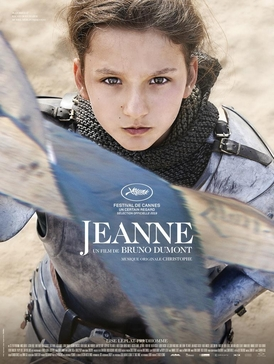

Bruno Dumont
2019
138 minutes
At first this looks like it's going to be a long, dull slog of a biopic of Joan of Arc. But then you see it's directed by Bruno Dumont. Make no mistake, it's still going to be fairly long and dull. But it's also going to get weird.
First of all, it's kinda a musical. What was left of renowned French singer Christophe is in it, playing one of the priests who questions Joan at length. He also does some of the songs for the soundtrack. There's really no good way to translate this bit of casting into English.
One of Joan's prominent soldiers is Gilles de Rais. You swear that you've heard this name in some other context, before looking it up and finding that this is indeed the famous child killer Gilles de Rais, back before he made it big for what he is best known for. No children are harmed in this film. Well, except for Joan, who (SPOILER) is ultimately imprisoned and burned at the stake.
You initially think that a film about someone being burned at the stake is not a good choice for a musical. But then you remind yourself that one of your favorite opera arias of all time ("Stride la Vampa" from Il Trovatore) is about precisely that topic.
You pause the film to go listen to that as soon as the thought occurs to you.
You are sad that you have not been able to track down one of your favorite versions of this particular aria, in which a non-famous soprano sings the song while gargling water before giving a succinct and hilariously profane summary in English of the basic contents of the opera. This was played regularly on your radio show. It is not on Spotify or Youtube--you checked...
Time to choose something different: